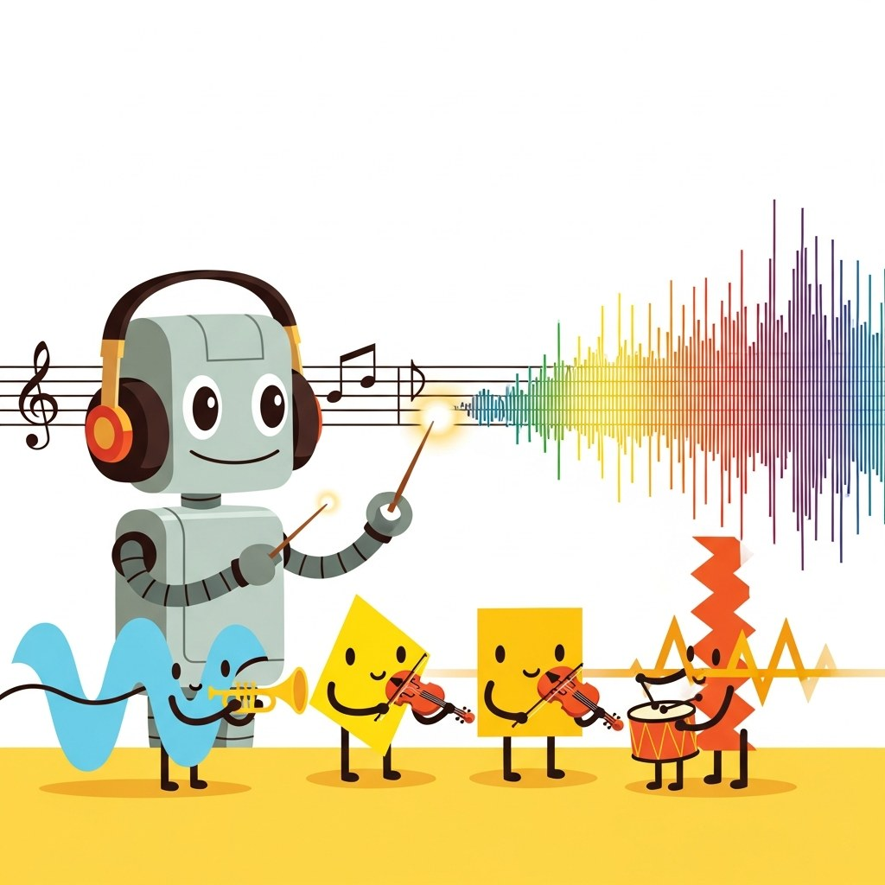

"Speech, music, and video are just more tokens; the trick is choosing the right vocabulary."
Echo, Pitch-Perfect AI Agent
Part IV trained text models. Part V opens the modalities: audio, vision, 3D, and the cross-modal reasoning that ties them together. This chapter starts with audio: Whisper, MusicGen, AudioLDM, the codec models, and the production pipelines that handle speech and music together.
Generative models for time-series media. The first half covers audio (text-to-speech with VITS/Bark/F5-TTS, voice cloning, music generation with MusicLM/MusicGen/Suno/Udio, audio editing, and ASR). The second half covers video (Diffusion Transformers, frontier video models Sora/Veo/Runway/Kling/Pika, camera and motion control, video editing, and long-form cinematic synthesis).
Chapter Overview
Audio, music, and video generation followed the same trajectory as image diffusion, just two years compressed. This chapter walks the practical stack: VITS, Bark, and F5-TTS for text-to-speech; zero-shot voice cloning and conversion (the most consequential capability gain of 2022 to 2026); MusicLM, MusicGen, Suno, and Udio for music; stem-aware editing and remixing; ASR as the underrated workhorse; Diffusion Transformers for video; Sora, Veo, Runway, Kling, and Pika as the frontier; camera and motion control; editing pipelines; and the long-form, cinematic generation problem that is still genuinely open.
Audio and video AI are the modalities where capability and product-market fit moved fastest in the 2024 to 2026 window. By the end of this chapter you will know which model to reach for, where the failure modes hide, and what the cost-latency-quality envelope looks like in production.
- Choose between VITS, Bark, and F5-TTS for a given TTS use case and latency budget.
- Apply zero-shot voice cloning ethically, including consent, watermarking, and detection considerations.
- Compare MusicGen, Suno, and Udio across controllability, audio fidelity, and licensing posture.
- Architect a Diffusion Transformer pipeline for spatiotemporal latent video generation.
- Evaluate Sora, Veo, Runway, Kling, and Pika on the capability and accessibility axes that matter for product work.
- Design camera-control and motion-control workflows using ControlNet-style conditioning for video.
- Diagnose the long-form coherence problems that still bound cinematic video generation in 2026.
Prerequisites
Sections
- 20.1 Text-to-Speech: VITS, Bark, and F5-TTS Text-to-speech (TTS) has crossed the uncanny valley. Entry
- 20.2 Voice Cloning, Zero-Shot TTS, and Voice Conversion Zero-shot voice cloning is the most consequential capability gain in audio AI of the 2022-2026 era. Entry
- 20.3 Music Generation: MusicLM, MusicGen, Suno, and Udio Music generation followed the same trajectory as text-to-image but compressed into two years. Intermediate
- 20.4 Audio Editing: Stems, Style Transfer, and Remixing Editing is the part of the audio AI stack that touches real customer workflows. Intermediate
- 20.5 Speech Recognition for the Multimodal Stack Automatic speech recognition (ASR) is the underrated workhorse of multimodal AI. Intermediate
- 20.6 Video Diffusion Transformers (DiTs) The architecture that drives Sora, Veo, Runway Gen-4, and every serious 2025 video generator is a Diffusion Transformer (DiT) operating on spatiotemporal latent patches. Intermediate
- 20.7 Leading Video Models: Sora, Veo, Runway, Kling, and Pika The capability and accessibility of video generation have changed roughly twice as fast as image generation did at the same point in the technology's life. Intermediate
- 20.8 Camera Control, Motion Control, and ControlNet for Video A frontier video model from Section 33.2 produces a plausible shot from a prompt. Intermediate
- 20.9 Video Editing and Remixing Most working video AI in 2026 is editing, not generation. Advanced
- 20.10 Long-Form and Cinematic Video Generation The hardest open problem in video AI is not making a 4-second shot look good (Section 33.2 covered that frontier). Advanced
What's Next?
This chapter begins with Section 20.1: Text-to-Speech: VITS, Bark, and F5-TTS. Each section builds on the previous one, so we recommend reading them in order.